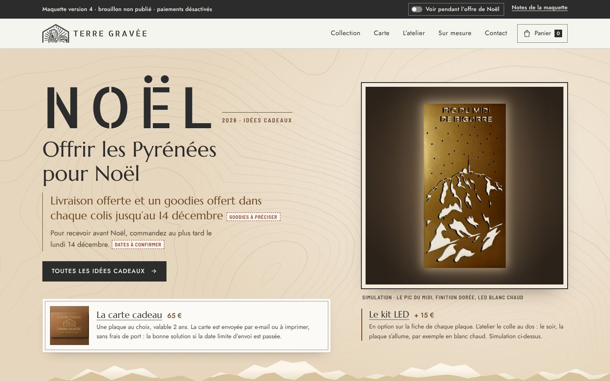

Terre Gravée
Ouvrez-la, cliquez partout, ajoutez au panier : rien n’est envoyé ni payé. Les notes réunissent ce qui reste à fournir ou à décider ; le questionnaire recueille vos réponses.

Le mur d’exposition, sa simulation LED et ses fiches claires, avec la carte des lieux, l’histoire d’Aquensis et le texte de chaque lieu, aux couleurs de la charte Terre Gravée.
Les premières maquettes (versions 0 et 1) ont été retirées le 1er novembre 2026 ; leur historique reste dans le dépôt.